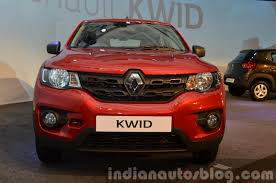
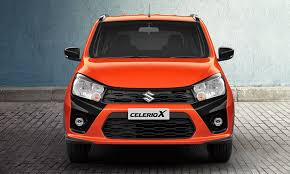

Best Cars Under ₹6 Lakhs in India (2026)
June 11, 2026 by GearVize Team
Buying a budget-friendly car in India has become easier than ever. Several manufacturers offer reliable, fuel-efficient, and feature-rich cars under ₹6 lakhs. In this blog, we compare the top choices for first-time buyers, students, and small families.
Benefits of Budget Cars
- Affordable purchase price
- Excellent fuel economy
- Lower maintenance costs
- Easy availability of spare parts
- Perfect for city driving
1. Maruti Suzuki Alto K10

Price: ₹4.23 Lakh (Approx.)
The Alto K10 is one of India's most popular entry-level hatchbacks. It offers excellent mileage, low maintenance costs, and a compact design.
2. Maruti Suzuki S-Presso

Price: ₹4.50 Lakh (Approx.)
The S-Presso offers SUV-inspired styling with a tall seating position and impressive fuel efficiency.
3. Renault Kwid

Price: ₹4.70 Lakh (Approx.)
Renault Kwid stands out with its stylish design, touchscreen infotainment, and SUV-like appearance.
4. Maruti Suzuki Celerio

Price: ₹5.60 Lakh (Approx.)
Celerio is famous for delivering one of the highest mileage figures in its segment while maintaining a comfortable ride.
5. Maruti Suzuki WagonR

Price: ₹5.79 Lakh (Approx.)
WagonR remains one of the most practical family hatchbacks with a spacious cabin and reliable engine options.
Comparison Table
| Car | Price | Mileage | Fuel Type |
|---|---|---|---|
| Alto K10 | ₹4.23 Lakh | 24.9 km/l | Petrol / CNG |
| S-Presso | ₹4.50 Lakh | 25.3 km/l | Petrol / CNG |
| Renault Kwid | ₹4.70 Lakh | 22 km/l | Petrol |
| Celerio | ₹5.60 Lakh | 26.6 km/l | Petrol / CNG |
| WagonR | ₹5.79 Lakh | 25.1 km/l | Petrol / CNG |
"A good budget car should be affordable, fuel efficient, and reliable. The cars listed above continue to dominate the Indian entry-level market."